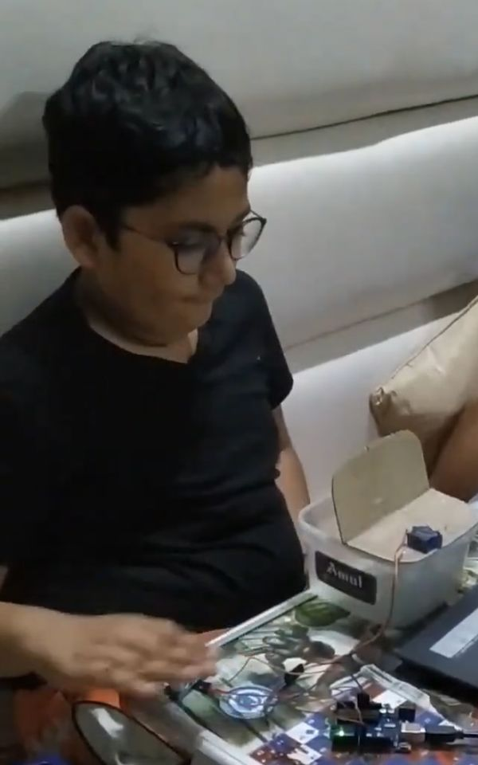
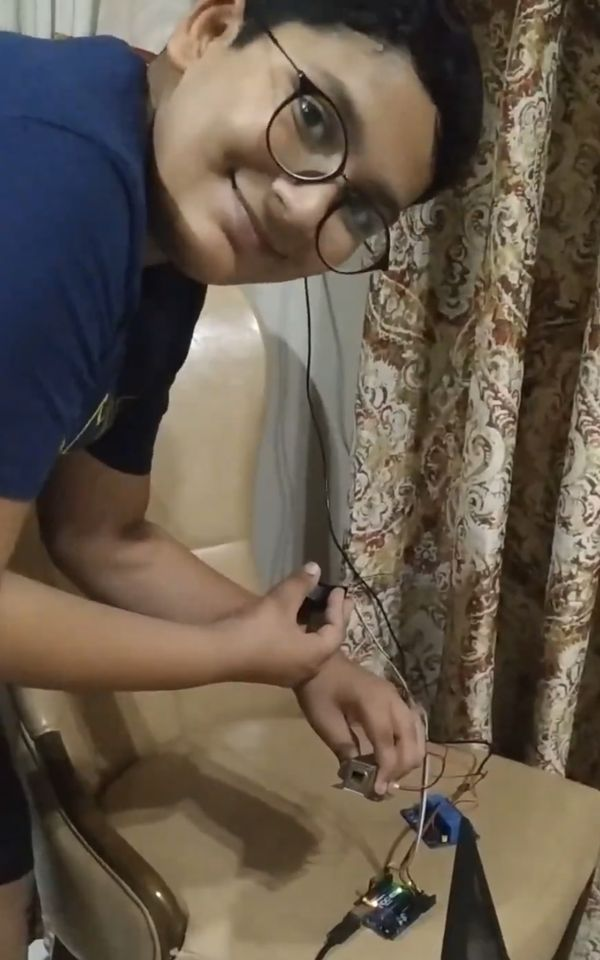

How I got here
-
before I was 8
I took things apart to see how they worked
Toys never survived me. I blew the fuse for the whole house. I mixed chemicals I’d ordered off Amazon. I lay down on the platform beside the tracks as a train pulled in. I filled pages with circuit drawings.
All of it for one reason: I had to understand what was going on inside. Curious, and destructive with it.
-
age 8
My dad made me a deal
He got me an Arduino kit, and it came with a challenge: build something creative with it. Until I did, no more toys. No kid likes going without toys, and I hated losing a challenge even more.
So I sat down at my grandpa’s old Windows XP laptop and copy-pasted Arduino code I didn’t understand. Then I noticed something. I didn’t need to understand all of it. I could change the numbers I saw, a small edit here and there, and watch what happened.
It took me a whole year to build one thing: a small LED whose brightness I controlled with three switches. Ouch.
// inside loop()int b = 0;if (digitalRead(2)) b += 40;if (digitalRead(3)) b += 80;if (digitalRead(4)) b += 135;analogWrite(9, min(b, 255));// b is 120 right nowLED on pin 9
of 255
go on. drag the numbers, flip the switches.
-
2018
Now I knew “coding”
So I built a smart dustbin. I know. Not the example to open with.
Then a fingerprint door lock, and a lot more after that.

the smart dustbin, 2018 
fingerprint door lock, 2018 -
age 12
Then I discovered rooting
Android rooting changed my whole life. It led me to custom ROMs and custom recoveries. My phone, a Redmi Note 6 Pro (codename tulip), didn’t have a recovery, so I learned how to build one, and built it.
I showed it to the phone’s community and it spread through Telegram’s Android scene almost instantly. I was “the 12-year-old Android developer.” Other developers taught me more, and I officially joined the OrangeFox Recovery team. Online I go by XelXen.
the 12-year-old Android developer -
the years after
Hundreds of projects
For years I contributed to hundreds of other projects, LibreTube and BlissOS among them. In between I learned Python, Rust, and Go and built more and more of my own, all while writing software for my dad’s studio.
-
2024 to now
From Panipat to Penn State
In 2024 I spent nine months as a machine learning intern for Videolytical Systems, a company based in Noida. It was all online. I only went to Noida about once a month.
I finished school in Panipat in March 2025 and started at Penn State that fall, in the Schreyer Honors College.
Now I do research at the Human Language Technologies Lab, lead the technical side of GDG@PSU, and build Adle. I still have to know what’s going on inside things. These days I find out by building them.